Automotive Vision Foundation Model & Inspection Platform
A production architecture for rebuilding the vehicle damage model as three use-case models (exterior, interior, undercarriage): a domain-pretrained foundation, a server parent and a phone student per use case, multi-view fusion, measured severity and an auditable source of truth, deployed on phones with a server of record.
Scope: Exterior first; interior and undercarriage on the same platform Replaces: Damage POC (DINOv2 ViT-S/14 single-head segmenter, ft_v3) Date: 4 November 2026 · Status: Proposal for review
3 model pairsExterior, interior, undercarriage: a server parent and a phone student each
Edge + serverThe phone gives an instant provisional result; the server result is the record of truth
Measured, not assumedEvery number carries its method, uncertainty and provenance
The POC finds that a car is damaged. It is much less reliable at saying what the damage is, where it is and how severe it is. That gap is what users experience as roughly 70% accuracy. Fixing it takes a new model and a new data and truth system; changing either one alone will not get there.
What we build
AVFM, an Automotive Vision Foundation Model: DINOv2 ViT-L/14 further self-supervised on millions of unlabelled vehicle photos, so its features understand paint, panels, reflections and trim.
Three use-case parents on the server (§7): exterior (panels with sides, multi-label damage, nuisance, viewpoint, keypoints), interior (components, material, defects) and undercarriage (components, visible abnormalities).
A high-resolution surface specialist for scratches, chips and paint defects on panel crops.
Three phone students (CNN / hybrid, 10–25 MB each), each distilled from its own parent; one is loaded at a time, with the server as fallback.
Assisted capture: a 10-photo guided walk-around plus prompted close-ups, using ordinary 2D phone photos only, with no LiDAR or depth sensor (§8).
How it becomes reliable
An append-only inspection ledger holds every image, prediction, correction and repair outcome, with hashes and model versions.
Ground-truth tiers: repair orders and physical measurements outrank assessor labels, and assessor labels outrank model output.
Multi-view fusion: damage has to stay in the same place on the panel across photos, so reflections and glare drop out.
Calibrated, fail-closed decisions with a guaranteed miss rate on auto-cleared vehicles.
Key decision
Choice
Why
Foundation model
Continue pretraining DINOv2 ViT-L/14 (Apache 2.0) on our own vehicle images. Do not train from scratch.
Most of the domain gain for about 1–5% of the cost of training from scratch
Fixes the POC's stride-14 masks and lack of instances
Damage output
Multi-label instances + explicit nuisance classes
A dent can also be scratched; reflections are learned, not filtered
Unit of decision
Vehicle-level damage list fused from a guided capture set
Single photos cannot separate glare from damage
Severity / repair
Versioned rules engine fed by measured evidence
Auditable; no assumed dent depth
Use cases
Three separate model pairs (exterior, interior, undercarriage) from one shared foundation
No interference between tasks; independent release and risk settings
Edge vs server
Edge is provisional and offline-capable; server is the record of truth
Fast UX without trusting a small model for the final result
Bottom line. Of the improvement we expect, roughly 60% comes from data and ground truth (relabelling, first-party gold sets, measured depth, repair outcomes), 25% from architecture (foundation pretraining, instance decoder, high-resolution branch) and 15% from system design (multi-view fusion, calibration). These shares are a planning judgement, not a measurement. Phase 0 starts data collection on day one for this reason.
2Baseline: why the POC tops out near 70%
The POC's headline 96% is case recall: "is there any damage in this photo?" Every downstream question scores far lower. Users judge the whole answer, so their impression is closer to the weakest links.
Measure (POC ft_v3, public held-out data)
Measured
Status
Root cause
Any-damage case recall (81 photos)
96.3%
Good
Large damage dominates the test set; minor scratches are under-represented
Clean-photo false alerts (456 fresh photos)
2.4%
Good*
*Public photos only; silver/white cars under showroom light remain the weak spot
Predicted "scratch" is really a scratch
32%
Fail
Training labels are "broken part" polygons covering whole bumpers
Predicted "paint damage" is correct
36%
Fail
Same label problem; softmax forces a single type per pixel
Predicted crack / deformation is correct
87% / 73%
Weak
Confidence does not separate right from wrong (poorly calibrated)
Damage mask IoU
≈ 0.38
Fail
One stride-14 feature map with bilinear upsampling, so thin structures are lost
Part segmentation mIoU
0.62
Partial
Small head on the frozen damage backbone; mirror 0.28, front window 0.23
Left / right side of car
heuristic
Partial
Geometry rules on the part mask; unknown on ambiguous angles
Dent depth (d1–d3)
assumed d2
Missing
No depth labels or measurement
Severity vs assessor
not measured
Missing
No human-rated severity set
Phone runtime
not shown
Missing
ViT-S × 2 scales × flip TTA × many 768 px tiles: about 8 s on a laptop GPU
Root causes, ranked
1 · Labels and data (largest)
About 570 labelled damage images with coarse polygons, no first-party phone photos, no adjudication, no measured depth. No architecture can learn a scratch/crack boundary the labels do not contain.
2 · Architecture
A single-scale head at 1/14 resolution, semantic rather than instance output, mutually exclusive types, a small ViT-S backbone, and a parts model that piggybacks on damage features.
3 · Single-image decisions
Glare, LED strips and reflections look like damage in one frame. With no second view, a heuristic halo filter is the only defence, and it costs recall.
4 · Calibration and truth
The threshold (0.381) was tuned on curated public photos. There is no first-party calibration set, no record of corrections, and no repair outcomes to learn from.
3Current POC pipeline, step by step
Every stage of the served POC (ft_v3, threshold 0.381), traced on one real photo from pipeline_steps/white_scorpio_led. Each stage is paired with what the new architecture changes there.
Why this photo. The car is clean. Its LED daytime-running strip is read as a crack plus deformation on the front bumper (score 0.573) and rated "moderate (3)". The only thing that stops a false damage report is the low-resolution recapture gate. The same photo taken at a higher resolution would have been reported as damaged. This is the failure mode that multi-view fusion and learned nuisance classes are designed to remove.
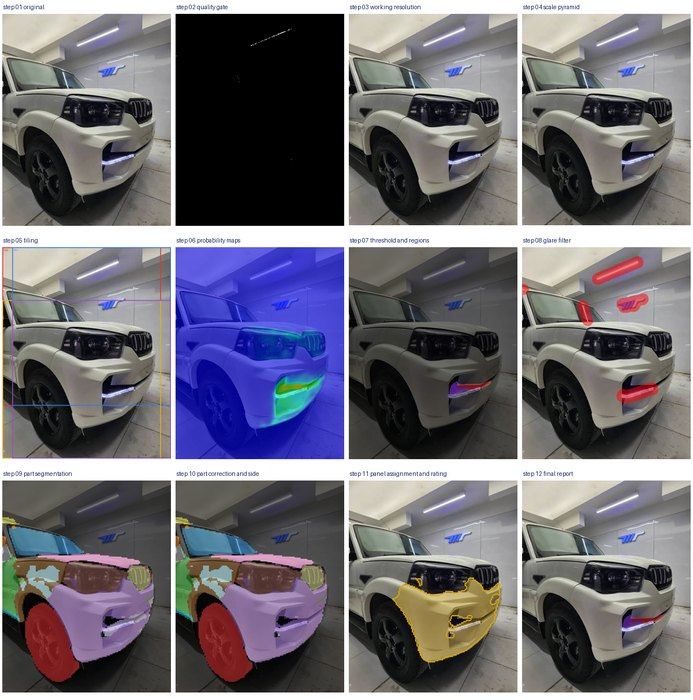
Figure 1. All twelve stages of the POC pipeline on the white Scorpio photo, left to right and top to bottom (pipeline_steps/white_scorpio_led/overview.png).
Step 1 · Input
Uploaded photo
File as received: 399 × 501 px, RGB. EXIF rotation and RGB conversion are applied. The API accepts JPEG, PNG and WebP up to 20 MB and 50 megapixels.
Code: api.py upload validation
New design: photos come from a guided capture set of 10 named slots at full 12 MP resolution (N1, §8). A 399 px photo never reaches the model.
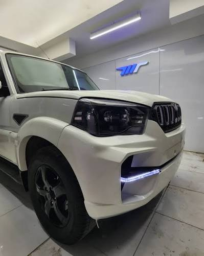
original.png · 399 × 501
Step 2 · Pre-model gate
Quality gate
Short side
399 px
recapture below 480
fail
Dark pixels
3.0%
limit 35%
pass
Clipped highlights
0.05%
limit 20%
pass
Specular
0.25%
review above 1.5%
pass
Sharpness
0.00421
recapture below 0.00035
pass
Result: low_resolution → the final decision will be recapture_required.
New design: a learned quality and coverage model runs live in the viewfinder (N2), so the technician fixes the shot before leaving the car, not after upload.
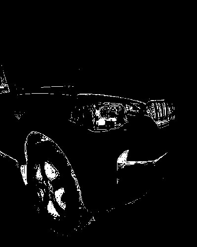
dark pixelsclipped highlights
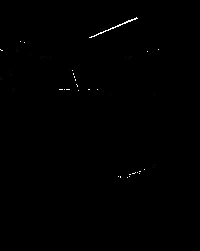
specular highlights
Step 3 · Pre-processing
Resize into the model's working range
The model was trained on photos with a 1,024–1,600 px long side. This photo (501 px) is upscaled to 816 × 1024 (bicubic) so thin scratches keep enough pixels. Probabilities are mapped back to the original size at the end.
Measured effect: held-out damage caught 87.7% → 96.3%, no change in clean false alerts. Code: working_image(), restore_size()
New design: upscaling cannot add detail that was never captured. The new pipeline takes native-resolution photos and full-resolution panel crops (N3).
working_image · 816 × 1024
Step 4 · Pre-processing
Scale pyramid
The working image is analysed at 1.0× (816 × 1024) and 1.5× (1224 × 1536). The 1.5× copy makes small damage larger for the model.
Profile: triage_scales: [1.0, 1.5]
New design: multi-scale features are produced inside one forward pass by the ViT-Adapter pyramid (N4), so the whole model no longer has to be re-run at each scale.
1.0× · 816 × 10241.5× · 1224 × 1536
Step 5 · Inference set-up
Tiling and flip augmentation
Each scaled image is cut into 768 × 768 tiles with 192 px overlap: 4 tiles at 1.0× and 6 at 1.5×. Every tile also runs mirrored, and the two predictions are averaged and blended with a Hann window. That is 20 ViT-S forward passes for this one photo.
New design: one pass at ~1,024 px for the whole photo, plus the surface specialist only on flagged panel crops. Flip TTA runs only on the server teacher.
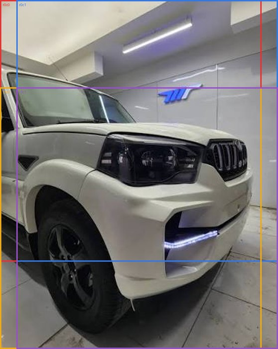
tile grid 1.0× (4)
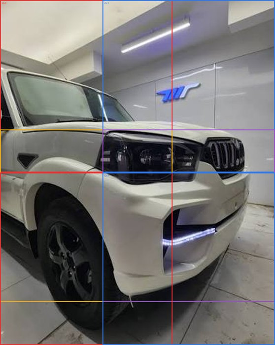
tile grid 1.5× (6)
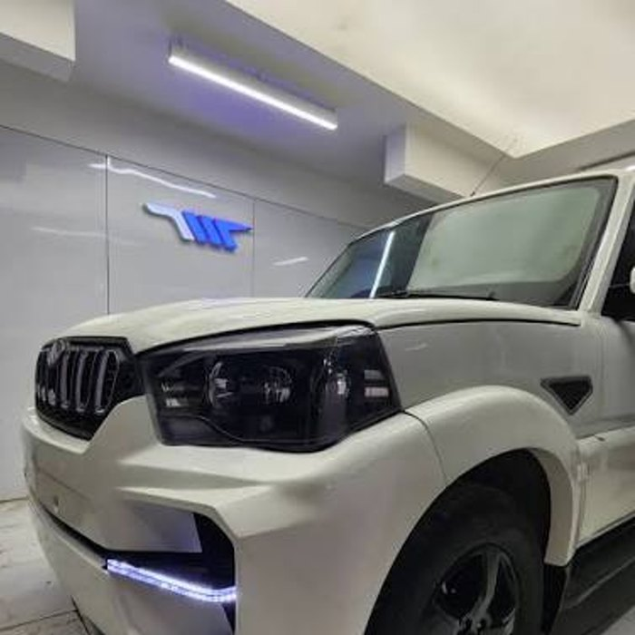
one tile, mirrored
Step 6 · Damage model (ONNX)
Dense probability maps
Three heads per pixel: presence (damage yes/no), type (5 classes, softmax) and exterior (vehicle surface). Any-damage score = (1 − pbackground) × (0.5 + 0.5 × pexterior). The LED strip lights up as the strongest "damage" on the photo.
New design: AVFM backbone with instance-level, multi-label damage outputs, plus explicit reflection / lamp / glare classes (N6, N7), so a lit DRL strip has a correct class to fall into.
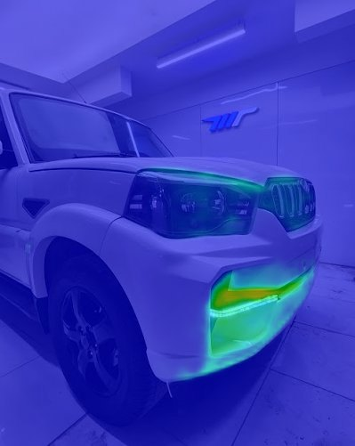
fused score (blue 0 → red 1)
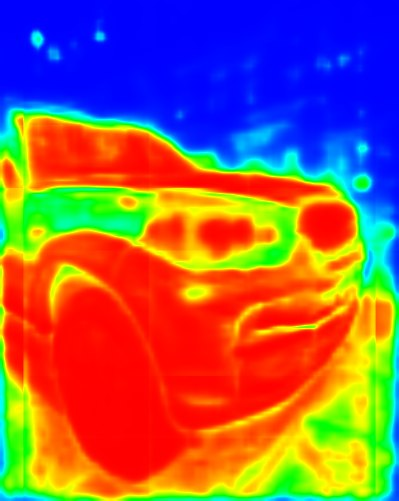
exterior head
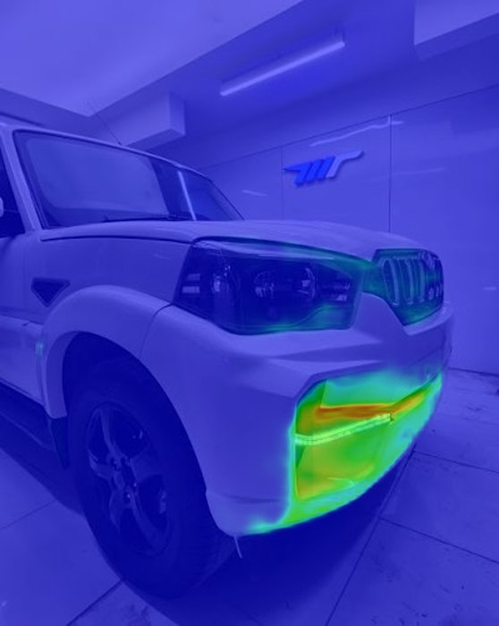
score at 1.5×
Step 7 · Post-processing
Threshold 0.381 and region filtering
Pixels scoring ≥ 0.381 are damage candidates. 8-connected regions smaller than 1,200 px are dropped. Each region takes the damage type most of its pixels voted for. Here the result is one region on the DRL strip: crack_or_breakage (red) with deformation (purple).
Colours: dent orange · scratch blue · crack red · paint yellow · deformation purple
New design: per-class calibrated probabilities. The auto-clear threshold is derived from a target miss rate with conformal risk control (N11), and instances come from the query decoder rather than connected components.
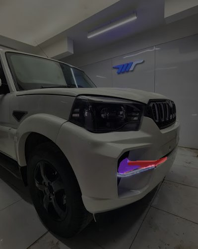
regions on photo
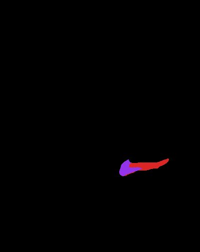
region mask
Step 8 · Post-processing
Glare / light filter
A halo is drawn around clipped pixels (red). A damage region lying ≥ 85% inside the halo goes to manual review instead of being reported. Here 1 region was kept and 0 removed: the LED strip is not clipped strongly enough to be caught. The 18-setting grid in §4.5 shows that the settings which do catch it lose 6–8 real damages.
New design: a single photo cannot reliably tell a reflection from damage. Cross-view consistency (N9) can: the DRL strip stays fixed to the lamp while a crack stays fixed to the panel. Lamps are also recognised as panels with their own class.
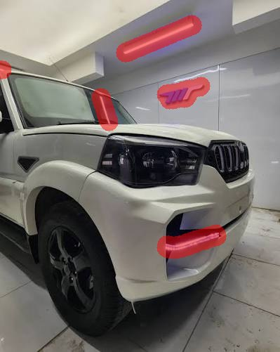
glare halo zonekept as damage (1)
Step 9 · Parts model (ONNX)
Car-part segmentation
The photo is letterboxed to 644 × 644. The frozen damage backbone plus a conv head labels each pixel as one of 21 parts. Visible here: front bumper 14.4%, front wheel 7.7%, headlight 4.3%, windshield 4.0%, fender 3.3%, front door 2.0%, bonnet 2.0%, quarter panel 1.7%, grille 1.2%, rear bumper 1.0% (wrong).
parts-v1: held-out mIoU 0.62 (train-val 0.654); no left/right classes
New design: a dedicated panel-instance head with explicit sides (front_left_door), semantic keypoints and a viewpoint head (N5), trained on its own labelled set.
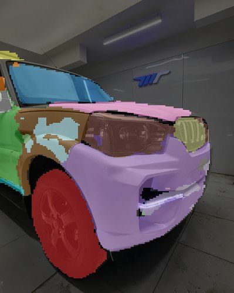
raw part labels
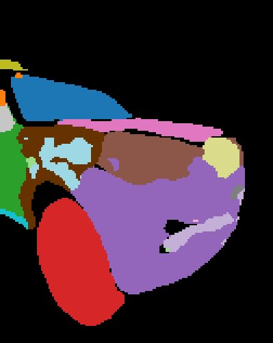
part id mask
Step 10 · Rules
Front/rear correction and photo angle
If one end of the car dominates by 3:1 (grille, headlights, bonnet, windshield vs tail lights, boot, rear glass), a bumper labelled for the other end is relabelled: 1,988 bumper pixels changed. The photo angle comes from where front and rear parts sit in the image: right, confidence 0.81.
Code: views.py geometry rules; output view.json
New design: the viewpoint is predicted directly (azimuth and elevation bins) and checked against the guided capture slot, so a wrong angle becomes a recapture prompt instead of a silent left/right error.
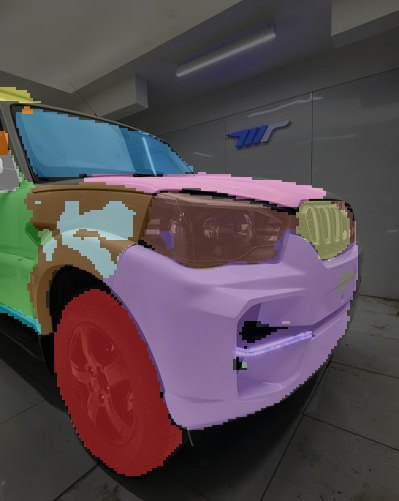
corrected parts · view: right
Step 11 · Rules
Damage on panels and intensity rating
Each region takes the part under most of its pixels (overlap 0.65). Area is measured as % of that panel per damage type and rated 1–5 by the rubric. The panel takes its worst rating.
front_bumper
panel rating 3 · moderate
3.4% of panel
· crack_or_breakage
2.4% → 3
not in rubric, d3 row
· deformation_or_detachment
0.9% → 3
not in rubric, d3 row
New design: severity comes from a versioned rules engine fed by measured length, area and depth (N10, N12). Area is computed in panel coordinates, not raw pixels.
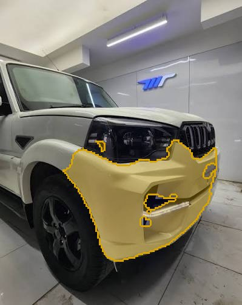
damaged paneldamage mask
Step 12 · Decision
Final decision (real predictor, end to end)
Decision: recapture_required. Reason: quality:low_resolution. Overall severity 3, photo angle right, damaged panels: front_bumper. Model time on this device: 16.0 s (onnx:gpu:fp32, Snapdragon laptop Adreno GPU). Manual steps and the real predictor agree (panels match = True).
New design: the decision is made for the vehicle, after teacher re-scoring and multi-view fusion (N9, N13), with reason codes and a recorded provenance chain.
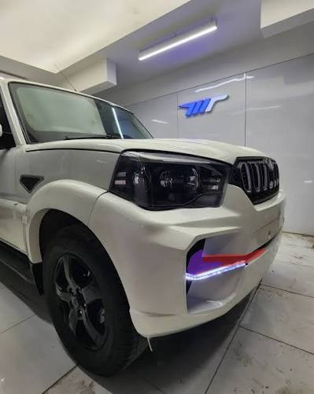
annotated_final.png
4POC data & experiment record
Everything the POC was built and judged on: datasets, licences, model lineage, every real-pipeline evaluation in reports/, the calibration profiles and the deployed artefacts. The figures below are recomputed from the raw JSONL files, not copied from summaries.
Only source of damage masks. Polygons are coarse "broken part" shapes, often whole bumpers
HITL car parts
–
85 / 15 hold-out
CC0
21-part masks for parts-v1
COCO clean scenes
≥ 100
calibration 50 · test 50 (real-pipeline reports)
Mixed Flickr
Clean negatives (some non-commercial)
Wikimedia "wild" clean
450
train 251 · val 71 · cal 56 · test 72
95% CC BY-SA
Hard negatives for ft_v2 (classic cars, chrome, shows)
Wikimedia India-models pool
1,030
train 787 · test 243
75% CC BY-SA
Mining pool and fresh clean test (Indian-market models)
Wikimedia colours / parked pool
1,100
train 887 · test 213
70% CC BY-SA
Mining pool and fresh clean test (silver/white/black/red, showroom)
Mined hard negatives (ft_v3)
537
mined from the 1,674 train-pool photos
as above
Clean photos v2 wrongly flagged; sampled 3× in training
User photos
3
2 damaged · 1 clean
first-party
Red door scratches, dark door dent+scratch, white Scorpio LED (known false alert)
Bundled samples
9
regression only
mixed
samples/damage (§4.10)
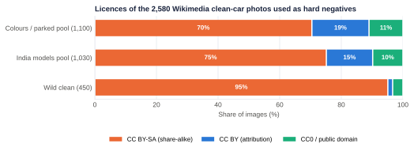
Figure 2. Licence families in data_provenance/*.jsonl (2,580 images). Across all three manifests, 1,977 (77%) are CC BY-SA share-alike, 366 (14%) CC BY and 237 (9%) CC0 / public domain. Whether share-alike terms extend to trained weights needs legal review before any commercial release.
4.2 A dataset bias hidden in the evaluation
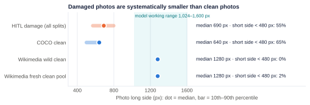
Figure 3. Photo long side by source, from the size field of 830 rows in v3_all_sets.jsonl.
Finding. Every damaged photo comes from one source (HITL) at a median 690 px, and 55% of them would trip the 480 px recapture gate. The Wikimedia clean photos, which supply both the hard negatives and the 456-photo fresh clean test, are all 1,280 px. COCO clean photos are small (640 px) but are easy, non-car-surface negatives. So the hardest negatives differ from the damage set in resolution as well as content, and the model can partly use image size or softness as a cue. The fresh-clean false-alert rate may therefore understate false alerts on small or soft first-party photos such as the 399 px Scorpio. The new data engine sets per-source resolution quotas and evaluates only on first-party phone captures (§12).
Quality flag (v3, 830 photos)
Damaged (146)
Clean (684)
Reading
possible_specular_glare
113 (77%)
512 (75%)
Fires on most photos of glossy paint, so it carries almost no information
low_resolution
80 (55%)
76 (11%)
Strongly tied to the damage source: a confounder
underexposed
0
5
Rare in curated public photos; expected to be much more common in workshop captures
excessive_glare_or_overexposure
0
3
blur_or_low_detail
0
1
4.3 Model lineage
Figure 4. Checkpoint lineage from runs/. Hashes are the first 8 characters of the SHA-256 recorded in each SELECTION.json. ★ served (SELECTED_DEVELOPMENT_MODEL.json), ✕ rejected. Rollback pointers: .previous.json (pilot), .previous_v2.json (v2).
4.4 Every model on the same held-out photos
Real tiled pipeline (768 px tiles, 1.0×/1.5×, flip TTA, ONNX Runtime on the Adreno GPU). Damage: 81 HITL test photos. Test clean: 50 COCO + 72 Wikimedia wild. Fresh clean: 456 never-trained Wikimedia pool photos. "Recall at x%" means the share of damage caught when the threshold is moved so that exactly x% of all 578 clean photos are flagged.
Model
Threshold
Damage caught
Test clean flagged
Fresh clean flagged
Recall @1%
@2%
@5%
pilot (original)
0.736
78/81 · 96.3%
36/122 · 29.5%
not run
42.0%*
42.0%*
56.8%*
ft_v2
0.381
72/81 · 88.9%
3/122 · 2.5%
64/456 · 14.0%
29.6%
42.0%
54.3%
ft_v3
0.381
71/81 · 87.7%
0/122 · 0.0%
15/456 · 3.3%
43.2%
86.4%
91.4%
ft_v3 + resolution norm. (served)
0.381
78/81 · 96.3%
0/122 · 0.0%
15/456 · 3.3%†
87.7%
96.3%
96.3%
ft_v5 (rejected)
0.381
74/81 · 91.4%
2/122 · 1.6%
33/456 · 7.2%
85.2%
87.7%
90.1%
* Pilot recall-at-rate uses the 122 test clean photos only (no fresh-pool run). † 11/456 (2.4%) once the glare filter (§4.5) is applied. Sources: previous_model_test.jsonl, current_model_calibration_and_test.jsonl + v2_fresh_clean.jsonl, v3_all_sets.jsonl, v3_resolution_normalised_changed_images.jsonl, v5_rejected.jsonl.
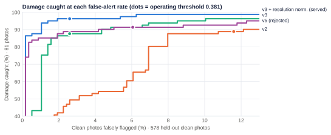
Figure 5. Best achievable damage recall at each clean-photo false-alert rate (81 damaged, 578 clean). The served configuration dominates at every rate. At 1% false alerts, v2 catches only 30% of damage while the served model catches 88%. Values are in the table above.
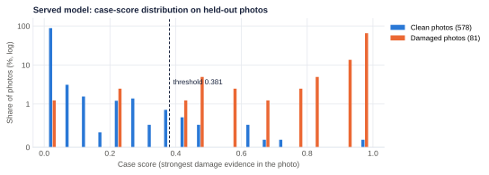
Figure 6. Case-score distribution of the served model (log scale). 89% of clean photos score below 0.05 and 79% of damaged photos score at least 0.9. The errors at threshold 0.381 are the 3 damaged photos below it and the 15 clean photos above it.
4.5 Glare-filter grid search
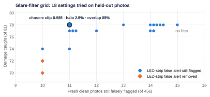
Figure 7. The 18 glare-filter settings (clip level 0.95 / 0.985 × halo 0.8 / 1.5 / 2.5% × overlap 50 / 70 / 85%) from v3_glare_grid_flagged_images.jsonl. The chosen setting removes 4 of 15 fresh false alerts and loses no damage. The only two settings that remove the LED-strip false alert lose 6 and 8 real damages.
Setting (clip · halo · overlap)
Damage caught
Fresh false alerts
Scorpio LED
Setting
Damage
Fresh FA
LED
0.95 · 0.8% · 50%
77
14
flagged
0.985 · 0.8% · 50%
77
14
flagged
0.95 · 0.8% · 70%
78
14
flagged
0.985 · 0.8% · 70%
78
14
flagged
0.95 · 0.8% · 85%
78
14
flagged
0.985 · 0.8% · 85%
78
15
flagged
0.95 · 1.5% · 50%
74
11
flagged
0.985 · 1.5% · 50%
77
11
flagged
0.95 · 1.5% · 70%
77
12
flagged
0.985 · 1.5% · 70%
78
13
flagged
0.95 · 1.5% · 85%
78
14
flagged
0.985 · 1.5% · 85%
78
14
flagged
0.95 · 2.5% · 50%
70
10
removed
0.985 · 2.5% · 50%
72
10
removed
0.95 · 2.5% · 70%
74
10
flagged
0.985 · 2.5% · 70%
77
11
flagged
0.95 · 2.5% · 85%
77
11
flagged
0.985 · 2.5% · 85% (chosen)
78
11
flagged
Baseline without the filter: 78 damage caught, 15 fresh false alerts. The grid was chosen on these same held-out photos, so the gain is optimistic.
4.6 Proxy protocol vs the real pipeline
The proxy is a single-scale 784 px pass on cached features with no tiling or TTA, used for fast fine-tuning. runs/candidates/ft_last3blocks_v1/metrics.json shows why it cannot pick models: it saturates near AUROC 1.0 while real-pipeline results differ widely.
Proxy metric
Baseline val
Baseline cal
Baseline test
Fine-tuned val
Fine-tuned cal
Fine-tuned test
Operating threshold
0.908
0.664
AUROC (damage vs clean case)
0.999
0.999
0.995
0.985
1.000
1.000
Recall at operating point
91.8%
96.9%
93.8%
94.9%
96.9%
96.3%
Clean false alert at operating point
0%
2%
2%
0%
0%
0%
Recall at 1% clean FPR
95.9%
93.8%
72.8%
96.9%
100%
100%
Mean damage IoU (deployed threshold)
0.348
0.370
0.381
0.383
0.356
0.376
Mean damage IoU (best threshold)
0.390
0.394
0.399
0.396
0.366
0.380
Type pixel accuracy on damage
70.0%
73.5%
77.6%
71.0%
74.3%
77.1%
What the numbers say. Whatever the threshold or checkpoint, mask IoU stays at 0.35–0.40 and type accuracy at 70–78%. That ceiling comes from the labels and the stride-14 head, not from tuning. It is the quantitative basis for the "~70%" impression and for the architecture and data changes in §13–§14.
4.7 Damage-type reliability
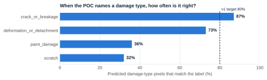
Figure 8. Pixel-level precision of each predicted damage type on held-out splits (tools/type_reliability.py). A predicted scratch is labelled crack 36% of the time and dent 23%. Confidence does not separate right from wrong (crack precision 87% at any confidence, 91% at 90%+), so a confidence gate cannot rescue these types.
4.8 Calibration profiles
Field
pilot (calibration-fp16-comp1200)
ft_v2 / ft_v3 / ft_v5 (profile.json)
any_damage_threshold
0.7357
0.381
target / measured recall
0.97 / 1.000
0.97 / 0.969
negative-pixel FPR
0.00765
0.0
positive cases · positive / negative pixels
65 · 2,056,643 / 32,504,992
tile · overlap · flip TTA · mixed precision
768 · 192 · on · on
triage scales · segmentation threshold
[1.0, 1.5] · same as triage
minimum component pixels · exterior floor · min damage coverage
The old calibration split could not set v3's threshold: it chose 0.05, which flags 13% of fresh photos, because it contains no hard clean domain. 0.381 was kept by judgement. The new design replaces this with a first-party calibration set and conformal risk control (§16).
4.9 Runtime artefacts and performance
Artefact
SHA-256 (prefix)
Size
Notes
ft_v3 checkpoint (served)
d674f468b287
98.9 MB
PyTorch, verified on load
ft_v3 ONNX, tile 768
c54f96ebd486
101.6 MB
opset 17 · CPU parity max |Δlogit| 1.4 × 10⁻⁵
ft_v2 / ft_v5 ONNX
47d1ab3dfa09 / 621263ece80b
101.6 MB each
kept for comparison / rollback
pilot ONNX + NPU FP16 context
70657510d108 / 93379fa9665b
101.6 / 71.1 MB
Hexagon NPU graph exists for the pilot only; not rebuilt for v3
parts-v1 ONNX
1d3b42a93c87
93.0 MB
644 px letterbox, CPU provider
Bundle on disk
≈ 260 MB (served set)
Too large for a phone app as-is; the target is ≤ 120 MB total (§17)
Latency (measured)
Value
Context
Model pass, Snapdragon laptop Adreno GPU (QNN)
8.1 s average
13–24 s per API request including report rendering
White Scorpio worked example
16.0 s
onnx:gpu:fp32, 20 tile passes + parts
One README-measured photo, CPU vs GPU
≈ 284 s vs ≈ 24 s
identical output; CPU range 60–280 s per photo
4.10 Severity rubric in use
Dent depth
0–20%
20–40%
40–60%
60–80%
80–100%
d1
1
2
3
4
4
d2 (assumed)
2
3
4
5
5
d3
3
4
5
5
5
Columns are damage area as a share of the panel. Labels: 1 trivial · 2 minor · 3 moderate · 4 major · 5 replace.
Scratch: < 20% of panel → 1, otherwise 3. Paint damage is rated like a scratch.
Crack and deformation are not in the rubric, so they are rated on the d3 row (an extension).
There is no depth model, so every dent is rated as d2 and flagged depth_assumed.
Without a part overlap, area falls back to % of vehicle (area_basis: vehicle).
4.11 Bundled regression samples
user_dents / blue_fender
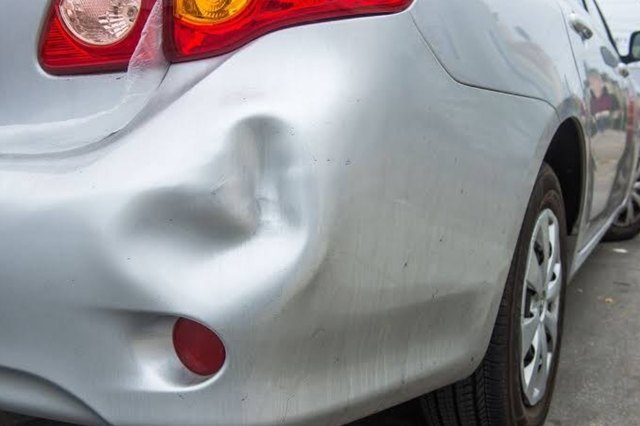
user_dents / silver_quarter
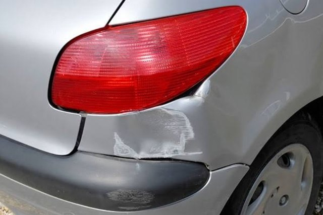
user_dents / taillight_dent
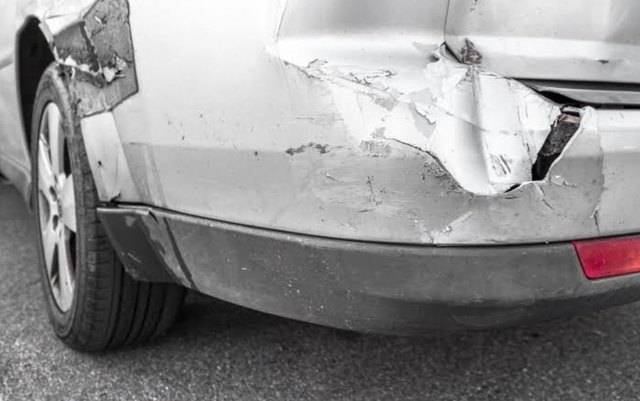
user_dents / torn_bumper
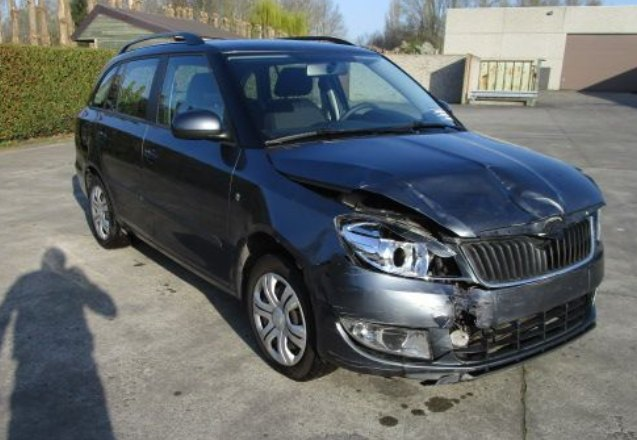
damaged.jpg
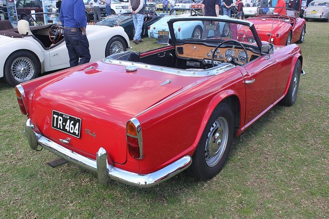
clean.jpgshowroom / white_scorpio (clean)
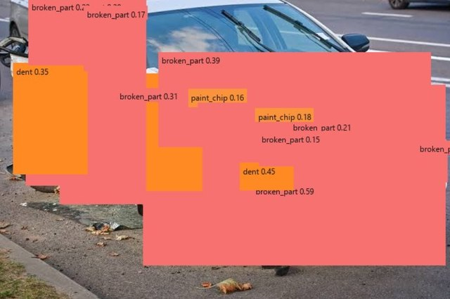
showroom / white_bmw (clean)
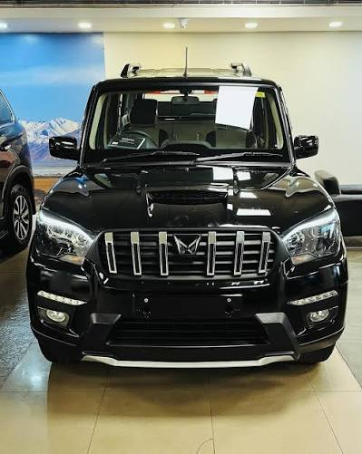
showroom / black_mahindra (clean)
These nine images are sanity checks, not an evaluation set. The new design keeps them as a smoke test in CI, beside the frozen first-party gold set (§19).
5Design principles
These rules constrain every component that follows. Any proposal that breaks one needs an explicit exception.
P1 · Evidence is separate from decisions
Models output observations: masks, types, measurements and their uncertainty. A versioned rules engine turns evidence into severity and repair options. Models never output "replace".
P2 · Fail closed
Uncertain, low-quality or disagreeing results go to recapture or human review. A missing measurement is null with a reason, never a default value.
P3 · One append-only record of truth
Every image, inference, correction and repair outcome is an immutable event with hashes and versions. Any past result can be replayed exactly.
P4 · Ground truth has tiers
Repair orders and physical measurements outrank assessor labels, which outrank model output. Every label records its tier and author.
P5 · The vehicle is the unit of decision
Results are fused across a guided capture set. A finding seen consistently from several angles is more credible than one strong pixel blob.
P6 · Edge is provisional; server is authoritative
The phone gives instant, offline feedback. Every inspection is re-scored by server teachers, and disagreements feed review and training.
P7 · Only real-pipeline numbers decide
Models are selected and gated on the full deployed pipeline over frozen first-party test sets, sliced by paint, light, device and damage size. Proxy metrics are for debugging only.
P8 · Everything pinned and reversible
Models, profiles, rules, taxonomies and datasets are content-hashed and promoted through a registry. Rollback is a pointer change.
6End-to-end system architecture
Three planes: the edge plane captures and gives instant feedback, the inspection plane produces the authoritative result, and the learning plane turns verified outcomes into better models.
Figure 9. System architecture. Solid arrows show the flow of a single inspection; dashed arrows show the learning loop, including the line on the left edge that releases signed models and rules back to the phone and server.
Lifecycle of one inspection
Capture. The app walks the technician through a fixed view set. The live quality model rejects blur, glare and bad framing before the shutter.
Edge inference. The student for the chosen use case runs once per photo; for exterior, the close-up specialist runs only on flagged panel crops. The result is shown as provisional.
Sync. All evidence is synced, not just low-confidence cases. Ingestion deduplicates by content hash and appends events.
Teacher re-score. Full-size teachers re-run on every image. Disagreement with the edge result is stored as a first-class signal.
Fusion and measurement. Detections from all views are mapped into panel coordinates and combined into one vehicle-level damage list. Lengths, areas and depths are measured where the method allows.
Rules and routing. The rules engine computes severity and repair options. The calibrated router decides between auto-accept, assessor review, recapture and escalation.
Close the loop. Assessor corrections and the eventual repair order are appended to the ledger and become training and evaluation data.
The system runs three use cases, each with its own model pair. A parent (teacher) model on the server is trained for that use case, then distilled into a small student model that runs on the phone. All three start from the same AVFM foundation weights and share the platform, but they are trained, calibrated, tested and released independently.
Figure 10. The model family. One shared foundation, three parents (one per use case), and three phone students, each distilled from its own parent. Only the student for the chosen use case is loaded on the phone.
Use case
Parent (server)
Student (phone)
Finds
Output policy
Exterior
AVFM-L + Mask2Former + surface specialist
CNN / hybrid at ~1,024 px + close-up specialist
Panels with sides; scratch, dent, crack, paint damage, missing part, corrosion, glass; reflections and lamps as nuisance
Severity 1–5, repair options; auto-accept allowed after canary
Interior
AVFM-L + Mask2Former + material head
CNN / hybrid at ~768 px
Dashboard, cluster, seats, door trims, console, steering wheel, headliner; tear, stain, crack, scratch, burn, broken part
Severity 1–5; working buttons and screens go on a technician checklist
Shocks, springs, arms, CV boots, exhaust, oil pan, lines, subframe, EV battery casing; leak, corrosion, torn boot, bent part, crack, impact mark
Visible / none visible / insufficient view; safety parts always escalate; never auto-cleared
7.1 Why three separate parents
No interference. Paint scratches, torn leather and oil leaks need different features. One shared model can quietly get worse at one while improving another.
Right-sized for each job. Exterior needs stride-4 masks and a close-up specialist; interior needs material recognition; undercarriage needs healthy-part comparison.
Separate risk levels. Undercarriage findings are safety-related and get stricter thresholds. Cosmetic exterior settings never apply to them.
Independent releases. Each pair passes its own gates and can be rolled back alone. Cost: about 3× the fine-tuning compute; the foundation pretraining still runs once.
7.2 Runtime: phone first, server as fallback
Figure 11. System architecture. Only the phone model for the chosen use case is loaded. A confident phone result goes straight to the report (green path). Otherwise the photo goes to the matching server model (amber path).Figure 12. Fallback rules. Any "yes" sends the photo to the server. The thresholds are starting values to tune on real workshop photos.
7.3 Why the parents cannot run on the phone
Model, one 1,024 px photo
Weights
Compute
Attention memory / layer*
On a phone
Parent (ViT-L/14 + Mask2Former)
~650 MB
~2–3 TFLOPs
~0.9 GB
Not feasible
Plain ViT-S/14 at 1,024 px
~42 MB
~0.4–0.5 TFLOPs
~0.35 GB
Too heavy (memory spikes, heat)
Plain ViT-S/14 at 518 px
~42 MB
~0.03 TFLOPs
~20 MB
Feasible, but loses fine detail
CNN / hybrid student at 1,024 px
10–30 MB
~20–40 GFLOPs
none
Feasible, sub-second on an NPU
Rough estimates, not benchmarks. * When the runtime builds the full attention matrix, as mobile runtimes often do. Transformer cost grows with the square of the number of 14 px patches (~5,300 at 1,024 px); CNN cost grows linearly with image size. This is why every student is a CNN or hybrid backbone.
Device tier
On the phone
Peak memory
Per photo
Flagship / upper mid-range (NPU)
Student for the chosen use case + close-up specialist
≤ 400 MB
≤ 2 s
Lower mid-range
Student at reduced input; close-up specialist on the server
≤ 250 MB
≤ 3 s
Low-end / no usable NPU
Capture-quality model only; analysis on the server after sync
≤ 100 MB
live checks only
Design targets, to be confirmed on the device matrix. The three students together take about 60–90 MB of storage; only one is in memory at a time.
This is what a service-centre technician does, what the system receives, which settings control it, and what comes out. The product is designed for ordinary 2D phone photos only: no LiDAR, depth sensor, AR depth or special hardware.
10 photosRequired guided walk-around per vehicle, each panel seen from at least 2 angles
+ 0–8 close-ups2 per suspected damage, prompted by the app. Typical total: 14–16 photos
≈ 4 minutesTarget capture time per vehicle, including retakes
8.1 Capture plan: which photos, from where
Figure 13. The 10-position guided walk-around (S1–S10, car shown from above with the front at the top). Left and right are the car's own sides as seen from the driver's seat. Close-ups (C) are requested only where the phone model sees a possible damage.
Slot
Name
Camera position
Must be in frame
Required
S1
Front
Centre line, 2–3 m, lens at bumper height
Whole front: bumper, grille, both headlamps, bonnet, windshield, front plate
yes
S2 / S10
Front-right / front-left 45°
45° off the corner, 2–3 m
Corner of bumper, headlamp, fender, bonnet edge, front wheel
yes
S3 / S9
Right / left side, front half
Perpendicular to the front door, 1.5–2.5 m
Fender, front door, mirror, A-pillar, front wheel, rocker (front half)
The flagged region with some undamaged surface around it
when prompted
I1
Identity
Number plate or VIN plate
Readable plate / VIN (skipped if VIN scanned at start)
if not scanned
O1–O3
Optional
Roof from a step, windshield close, odometer
Roof panel, glass chips, odometer reading for the record
optional
8.2 Panel coverage: why 10 photos
Multi-view fusion (N9) needs every panel in at least two photos taken from different angles. That is what separates real damage from reflections. Ten positions is the smallest set that achieves this for all side and end panels of a sedan, hatchback or SUV. Fewer photos leave doors or quarter panels with a single view.
Panel
S1
S2
S3
S4
S5
S6
S7
S8
S9
S10
Views
Front bumper, grille
●
●
●
3
Bonnet, windshield
●
◐
◐
3
R headlamp · R fender
◐
●
●
3
R front door · R mirror
◐
●
◐
3
R rear door
◐
●
◐
3
R quarter · R tail lamp
●
●
◐
3
Boot / tailgate, rear bumper
●
●
●
3
L quarter · L tail lamp
◐
●
●
3
L rear door
◐
●
◐
3
L front door · L mirror
◐
●
◐
3
L headlamp · L fender
◐
●
●
3
Rockers, wheels
●
●
●
●
2 per side
Roof
visible only on low cars from S1/S6; otherwise O1 from a step
0–1
● panel fully in frame · ◐ partly in frame or at a steep angle. A panel with fewer than two usable views is reported as insufficient_views, never as "no damage".
8.3 Interior and undercarriage capture
The other two use cases use the same assisted-capture app with their own slot lists. Undercarriage capture is done only with the car on a workshop lift.
Figure 14. Interior shots (cabin from above, right-hand drive shown). Doors open, cabin light on, flash allowed.Figure 15. Undercarriage zones (car seen from below). Car on a lift, torch on, about 1 m from each zone.
Use case
Photos
Shots
Conditions
Exterior
10 (+ close-ups)
Front, rear, 4 corners at 45°, front and rear half of each side
1.5–3 m, flash off, car dry, no direct sun behind the car
Interior
8
Dashboard, cluster + steering, console, driver seat, passenger seat, rear seats, left and right door trims
Doors open, cabin light on, flash allowed
Undercarriage
8
Four corners (suspension, CV boots, brakes), front centre, centre tunnel, tank / battery, rear centre
Car on a lift, torch on; never crawl under a car that isn't supported
8.4 Assisted capture in the app
The app never asks for "a photo of the car". It asks for one named slot at a time, shows where to stand, checks the frame live, and takes the photo automatically when the frame is right. Screens below are illustrative wireframes, not final UI.
Figure 16. Assisted capture, part 1. A: the vehicle is identified from the VIN, which selects the panel map and the known dimensions used for scale. B: a named slot with a ghost outline, live checks, a mini-map of the walk-around and auto-capture. C: a close-up requested because the phone model flagged a possible scratch.
Capture rules the app enforces
One named slot at a time, in a fixed clockwise order starting at S1.
Live checks on preview frames: sharpness, exposure, glare on the target panel, distance band, horizon level, and whether the predicted view matches the slot.
Auto-capture when all checks pass. Manual capture is allowed after 3 failed attempts and is logged as an override.
Full camera resolution (≥ 12 MP), flash off, no digital zoom, no beauty or HDR-merge filters if the phone allows.
Close-ups are requested by the phone model, two per region, at least 20° apart, so reflections can be told apart from damage.
Technician guidance shown before step 1
Car washed or at least dry; open shade or even workshop light.
Do not stand where your own reflection falls on the panel.
Keep 1.5–3 m for walk-around slots; the app shows the distance.
Doors, boot and bonnet closed; mirrors unfolded.
Figure 17. Assisted capture, part 2. D: coverage check before submit. Each panel is coloured by how many usable views it has; uninspected panels are named. E: the result on the unfolded vehicle map, after the server has verified it. Each finding keeps its photos, measurement method and route.
8.5 Inputs
Input
Required
Specification
Used for
Vehicle identity
yes
VIN (17 characters) scanned or typed, or registration plate; looked up to make, model, year, body style and paint
Panel map per body style; known dimensions for scale
Use-case photos
10 · 8 · 8
Exterior slots S1–S10 (1.5–3 m, flash off); interior 8 cabin slots (doors open); undercarriage 8 zones (on a lift, torch on). JPEG at full sensor resolution (≥ 12 MP, never below 8 MP)
Parts, damage, fusion
Close-up photos
when prompted
2 per flagged region (typically 0–8 total); 30–60 cm; ≥ 20° apart
Fine damage, depth class, length
Identity / optional photos
optional
Plate or VIN plate (I1), roof (O1), windshield close (O2), odometer (O3)
Record, roof coverage, glass
Photo metadata (automatic)
yes
Slot ID, timestamp, device model, EXIF focal length and sensor size, phone orientation (gravity sensor), exposure, app and model versions. Location is off by default
Pose, scale, audit, drift monitoring
Technician inputs
optional
Customer-reported damage, notes, prior-repair flag; a dent-gauge reading if the workshop has one
Review context; ground truth
Job context
yes
Tenant / workshop, repair order or job ID, technician ID, consent scope for training use
Ledger, access control, training eligibility
8.6 Product parameters
Every parameter is versioned in a profile that is hash-pinned with the model bundle, as the POC already does with profile.json. Values marked "calibrated" are set on the first-party calibration set, not by hand. Defaults are starting points.
Group
Parameter
Initial value
Notes
Capture
Required walk-around slots
10 (S1–S10)
Per body-style template; pickups and vans get their own
Minimum photo resolution
12 MP (reject < 8 MP)
Long side ≥ 3,000 px native, never upscaled
Distance band
1.5–3.0 m · close-ups 0.3–0.6 m
Estimated from car size in frame and known dimensions
Slot angle tolerance
± 15° from slot azimuth
Checked by the viewpoint head
Live quality limits
blur, exposure, glare scores
Calibrated so < 5% of accepted photos are later judged unusable
Close-ups per flagged region
2, at least 20° apart
Up to 8 per vehicle before the app asks for review instead
Retakes before manual override
3
Overrides logged and reviewed
Model
Model bundle
one per use case: avfm-ext / -int / -und
Edge student + server teacher pair, signed
Main input size · crop tile
1,024 px · 1,024 px full-res crops
Crops only on flagged panels
Per-class temperature
calibrated
Target ECE ≤ 0.05
Nuisance suppression margin
calibrated
Damage kept only if p(damage) exceeds p(nuisance) by the margin
pillars, sills, airbag areas, HV battery, lamps with cracks
OEM-specific list
Audit sample rate
5% of auto-decided vehicles
Assessor re-check, feeds monitoring
Rules
Severity rubric version
sev-rubric-2.1
POC rubric as v1, extended with measured inputs
Repair option rules
per OEM / panel material
Cannot be overridden by any model
Privacy
Face and plate blurring
on for training copies
Originals per retention policy
Retention · training consent default
per contract · opt-in
Stored per image in the ledger
8.7 Outputs
Figure 18. Illustrative final report for one vehicle: damage map, findings table, evidence photos with overlays, coverage statement, provenance and sign-off. The same content is available as JSON over the API, as a PDF, and in the app (screen E).
Output
Contents
Format
Inspection result
One section per use case inspected. Route (auto-accept, auto-clear, review, measure, recapture, escalate), reason codes, automated_decision_allowed, provisional or verified status
JSON (API), app
Findings list
Per damage: panel and side, types with probabilities (multi-label), location on the panel (u, v), the photos it was seen in, consistency, measurements with method and uncertainty, depth class, severity 1–5 with rule, repair options
JSON, PDF table
Coverage statement
Per panel: number of usable views, insufficient_views or not_inspected; capture overrides
JSON, PDF
Evidence images
Each photo with mask overlay, close-up crops, unfolded vehicle damage map
JPEG / PNG, PDF
Provenance
Model, fusion, rules and profile versions with hashes; edge vs server agreement; ledger ID
JSON
Sign-off record
Technician or assessor confirmation or corrections, timestamp, user
Ledger event
Hand-off
Estimate-ready line items (panel, operation, severity) to DMS / ERP
With no depth sensor, every measurement comes from the photos themselves. Overlapping walk-around and close-up photos give camera poses through multi-view geometry (structure-from-motion). Known dimensions from the VIN lookup (wheel rim diameter, wheelbase, lamp and handle sizes) or a regulated number-plate size turn that geometry into millimetres. Targets below are design goals to be validated on gauge-measured ground truth.
Centreline of the instance mask × metric scale; curved panels corrected with the multi-view surface
mm ± mm
≤ 10 mm or 10% error
Scratch width
Mask width on full-resolution close-up crops
mm, coarse
Resolution-limited (~0.3 mm/px at 40 cm)
Damage area, % of panel
Instance area ÷ visible panel area in panel coordinates
% of panel, cm² when scaled
± 20% relative
Dent diameter
Instance outline × scale from the close-up pair
mm ± mm
± 15%
Dent depth
Classifier, not a measurement. d1 / d2 / d3 from 2D cues: shading gradients, distortion of reflected lines and highlights, crease or edge involvement, and how these change between the two close-ups. Trained on dents whose depth was gauge-measured or adjudicated by assessors
Depth class + probability, "estimated"; mm only from a gauge entry
Class agreement ≥ 80% (exact), ≥ 95% (±1)
Paint layer reached
Colour and texture of the scratch floor on close-ups (clear coat vs base coat vs primer or metal)
Likelihood per layer
Advisory only
Hidden, structural or mechanical damage
Not observable in photos
Escalation rule only
Never claimed
Ground truth without special hardware. The product itself needs only the phone. To train and validate the depth classifier, partner workshops record a handheld dent-depth gauge reading on a sample of dents during data collection (a low-cost tool, needed for the labelled set, not in production). Where no gauge exists, adjudicated assessor depth classes (tier T3) are used. Scale and length are validated against tape-measure readings on the same sample.
9New inference pipeline, step by step
What happens to one vehicle in the new system, from the first photo to the record of truth. Each use case runs the same steps with its own student and parent (§9.2 lists the differences). Steps N1–N8 run on the phone (as students) and again on the server (as teachers). N9–N14 run on the server, with a provisional version of N9 and N11 on the phone.
Figure 19. The fourteen steps of the new inference pipeline.
N1 · Phone
Guided capture set
Does
Walks the technician through 10 named slots S1–S10 (front, rear, four corners, two per side; §8.1), then two close-ups of any region the edge model flags. Records phone orientation, device and lighting per shot.
Output
Capture set with metadata; vehicle identity from VIN/plate
Gate
Every slot filled; ≥ 12 MP native; every panel in ≥ 2 views
Replaces
POC step 1 (any single upload)
N2 · Phone
Live quality and coverage
Does
A nano CNN runs on sampled preview frames (≈ 3–5 fps): blur, exposure, glare, distance, and whether the view matches the requested slot.
Output
Pass/fail per slot with spoken or on-screen guidance
Gate
Shutter blocked until pass; any override is logged
Replaces
POC step 2 (post-upload rules)
N3 · Phone + server
Native resolution and panel crops
Does
The main model sees the photo at ~1,024 px. Panels with candidate surface damage are cropped from the original pixels for the surface specialist. Nothing is ever upscaled.
Output
Working image + full-resolution panel crops
Gate
Crop must contain ≥ 1 px per 0.3 mm at the estimated scale
Replaces
POC steps 3–5 (upscale, pyramid, 20 tile passes)
N4 · Model
Foundation features (AVFM)
Does
One backbone pass. The ViT-Adapter injects a CNN spatial prior and returns a 4-level pyramid that every head shares.
Model
Edge: AVFM-S/14 or mobile CNN · Server: AVFM-L/14
Output
Multi-scale feature maps (strides 4–32)
Replaces
POC step 6 backbone (single 1/14 map, ViT-S)
N5 · Model
Panels, side, viewpoint, keypoints
Does
Panel instances in an OEM-aligned taxonomy with explicit sides; semantic keypoints (wheel centres, lamp corners, mirror base, handles); camera azimuth and elevation.
Output
Panel masks + a 2-D panel coordinate frame (u, v) per panel
Gate
Predicted view must match the capture slot, otherwise recapture
Replaces
POC steps 9–10 (parts-v1 + geometry rules)
N6 · Model
Damage instances (multi-label)
Does
The Mask2Former query decoder returns each damage as its own instance, with an independent probability per type (types are not mutually exclusive), plus per-instance severity and material priors.
Learned classes for reflection, glare, lamp/DRL, dirt, water, panel seam, sticker and aftermarket parts. A damage candidate that a nuisance class explains better is suppressed and logged for review sampling.
Output
Damage instances minus explained nuisance
Replaces
POC step 8 (clipped-pixel halo filter)
N8 · Model
Surface specialist on crops
Does
AVFM-B features plus a stride-2 CNN stem and U-Net decoder on full-resolution crops, trained with clDice, Tversky and boundary losses for 2–3 px scratches, chips and paint defects.
Maps every damage instance into its panel's (u, v) frame, matches instances across views (position, type, appearance) and scores consistency: seen in k of the n views where that spot was visible.
Output
One vehicle-level damage list with view references
Replaces
Nothing in the POC (single-photo decisions)
N10 · Vehicle
Measurement
Does
Metric scale from the multi-view geometry of the photos plus VIN-known dimensions (wheel rim, wheelbase) or the number plate. Length comes from the skeleton, area from panel coordinates. Dent depth is a d1–d3 class estimated from 2D cues; millimetres only if a gauge reading is entered (§8.8).
Output
Each value with uncertainty, method and quality, or null with a reason
Replaces
POC's pixel-share area and assumed dent depth d2
N11 · Vehicle
Calibration and routing
Does
Per-class calibrated probabilities, fused across views. Auto-clear uses a threshold λ set by conformal risk control so that missed damage on auto-cleared vehicles stays at or below α.
Output
Route + reason codes; automated_decision_allowed
Replaces
POC step 12 (frozen 0.381 + fail-closed routing, which is kept)
N12 · Vehicle
Rules engine: severity and repair options
Does
A versioned, unit-tested rules service. The POC's panel rubric is its v1, now fed with measured depth and area. Each output names the rule and inputs that produced it.
Output
Severity 1–5, permitted repair options, basis
Replaces
POC step 11 (severity.py)
N13 · Server
Teacher re-score and reconciliation
Does
Full-size teachers (with TTA) re-score every synced image. Edge and server results are both stored; any change of route goes to an assessor and into the active-learning queue.
Output
Authoritative result; disagreement events
Replaces
Nothing in the POC (one model, one pass)
N14 · Server
Report, ledger and learning loop
Does
Issues the report to DMS/ERP and appends every event to the ledger. Assessor corrections and the eventual repair order are joined back to the inspection and flow into the training pipeline (§10).
Output
Final report; immutable event stream; new ground truth
Replaces
Nothing in the POC (results were not stored)
9.1 POC step → new step mapping
POC step (§3)
New step
What changes in reliability terms
1 Upload · 2 Quality gate
N1 · N2
Bad photos are prevented at capture time instead of rejected after upload; every vehicle has a complete view set
3 Resize · 4 Pyramid · 5 Tiling + TTA
N3 · N4
Native pixels instead of upscaled ones; one pass instead of 20; small damage gets full-resolution crops
6 Probability maps · 7 Threshold + regions
N4 · N6 · N11
Instances and multi-label types instead of single-type blobs; calibrated thresholds derived from a target miss rate
8 Glare filter
N7 · N9
Reflections and lamps are learned classes, and they fail cross-view consistency
9 Parts · 10 Bumper correction + side
N5
Sides, keypoints and viewpoint are predicted and checked against the capture slot
11 Panel rating
N10 · N12
Measured length, area and depth feed a versioned rules engine with cited basis
12 Final decision
N11 · N13 · N14
The decision is per vehicle, re-scored by teachers, recorded with full provenance, and its outcome becomes ground truth
Leak, corrosion, torn boot, bent, crack, impact; plus healthy-part comparison (server)
N7 Nuisance
Reflections, lamps, dirt, seams, stickers
Sun glare, shadows, dust, personal items
Road grime, old oil residue, water
N8 Close-up specialist
Yes (scratches, chips)
Optional (leather, glossy trim)
No
N9 Multi-view fusion
Across 10 overlapping slots
Across overlapping seat and trim shots
Limited; each zone needs 2 shots from different angles
N10 Measurement
mm via VIN-known sizes; dent depth class
% of component; mm when scale known
Presence and location only
N11 Routing
Standard; auto-accept after canary
Standard; functions go to checklist
Safety parts always escalate; never auto-clear
Where it runs
Phone student, server parent re-checks
Phone student, server parent re-checks
Phone for capture and components; server for all abnormality decisions
10Training & release pipeline, step by step
How a photo captured in a workshop becomes part of a released model. Every step produces a versioned artefact and has a gate that must pass before the next step can start.
Figure 20. Training and release pipeline. Teal: data and labels. Navy: model building. Green: release. Every step writes a versioned artefact referenced by the next.
Step
What happens
Output artefact
Gate to pass
T1 Capture
Guided capture in partner workshops; consent scope recorded (service only / training)
Immutable dataset version (lakeFS/DVC); splits by vehicle, session, workshop, device
Dataset hash
Every image commercially licensed; no cross-split duplicates
T10 AVFM SSL
Stage 1 (224 px multi-crop) + Stage 1b (518 → 784 px) on unlabelled corpus
AVFM-L backbone
Probes beat stock DINOv2 ViT-L
T11 Teachers
Stage 2, run once per use case: three parents fine-tuned from the AVFM base (exterior, interior, undercarriage), each with its own heads and labels
Teacher weights + configs
Validation targets met
T12 Calibrate
Per-class temperature; conformal λ for auto-clear on the calibration set
Pinned profile
ECE ≤ 0.05; α satisfied
T13 Distil
Each parent distilled into its own CNN / hybrid student (feature, logit and mask KD) on labelled + unlabelled data
Student weights
Within agreed gap of teacher
T14 Export
Core ML (FP16), QNN / LiteRT (INT8 QAT), ONNX; signed model packs
Signed bundles
≥ 95% ops on accelerator
T15 Parity + bench
Numerical parity vs PyTorch; latency, memory, thermals on device matrix
Parity + bench report
IoU ≥ 0.98; same route ≥ 99%; latency targets
T16 Offline gates
Full §19 metric suite on frozen gold sets, per slice
Gate report in registry
All targets; no slice regression
T17 Shadow
Scores live traffic with results hidden; compared with current model and assessors
Shadow report
No worse on override and miss audits
T18 Canary → rollout
1–2 workshops, then per tenant; registry pointer moves; auto-rollback triggers armed
Promoted release
Override and miss audits within limits for 4 weeks
11Source of truth & ground truth
Reliability starts with knowing exactly what was seen, what was predicted, by which model, and what turned out to be true. The model is never the source of truth; the ledger is.
11.1 Inspection ledger (system of record)
An inspection is an ordered stream of immutable events. Images and masks live in object storage under their SHA-256. Events live in PostgreSQL and are published through a transactional outbox, so no event is lost or duplicated. A correction is a new event; nothing is overwritten.
Panels: instance masks using the OEM-aligned taxonomy with sides (front_left_door)
Damage: instance masks, one or more types each, severity 1–5 and material
Nuisance: reflection, glare, dirt, water, seam, sticker, aftermarket part
Measurement: length, width, depth with method and uncertainty
Outcome: repair action from the closed repair order
Exterior damage taxonomy v1
Shape
Scratch: clear coat / base coat / to substrate
thin
Scuff / abrasion
area
Paint chip
small
Paint peel / delamination / fade
area
Dent (with crease / edge flags)
area
Crack / fracture (plastic, glass)
thin
Deformation / misalignment
area
Detached / missing part
part
Corrosion
area
Glass chip / crack
small
Annotation protocol. A written guideline with visual examples for every class and boundary case, such as when a scuff counts as a scratch. Two independent annotators label each gold image and a senior assessor adjudicates. Inter-annotator agreement is tracked per class (target κ ≥ 0.75 on type, mask IoU ≥ 0.70 between annotators). Any class below target is retrained or redefined before more data is bought.
12Data engine
The data engine is the product's long-term advantage. It turns every inspection into either training data or evidence about where the model fails.
Figure 21. The data flywheel. Mining (step 3) uses the ledger so annotation spend goes to the images that move the metrics, not to more easy examples.
12.1 Data volumes (v1 targets)
Dataset
Volume
Purpose
Notes
Unlabelled vehicle corpus
2–5 M images (v1) 10 M+ (v2)
AVFM self-supervised pretraining
Workshop captures with consent, plus licensed sources. Curated by embedding dedup and cluster balancing
Labelled exterior set
25 k images ≥ 5 k vehicles
Exterior parent
≥ 60 k damage instances; every class ≥ 2 k instances; negatives include reflective paints
Labelled interior set
10 k images ≥ 2 k vehicles
Interior parent
All components and materials; clean cabins with wear, personal items and glare as negatives
Labelled undercarriage set
8 k images ≥ 1.5 k vehicles
Undercarriage parent
Lift captures from partner workshops; healthy parts per component family for comparison; expert-verified faults
Panel / keypoint set
15 k images
Panel, side, viewpoint, keypoints
Bootstrapped from Carparts-Seg (CC BY 4.0) and relabelled to our taxonomy
Measured subset
1.5 k dents 1 k scratches
Depth head, measurement validation
Handheld dent-gauge and tape-measure readings (T2), collected for training only; the product never needs them
Gold test set (frozen)
2 k images 500 vehicles
Release gates
T3 adjudicated; held out by vehicle, workshop and device; never trained on
Calibration set
1 k images 250 vehicles
Thresholds, conformal control
Same distribution as production; refreshed each quarter
12.2 Splits, curation and leakage control
Group splits. Split by vehicle (VIN hash), then by inspection session. Gold sets also hold out whole workshops, device models and a share of vehicle models.
Near-duplicate removal. Embedding similarity is checked across splits so photos of the same scratch cannot appear in both train and test.
Slice coverage. Quotas per paint colour and finish, lighting class, device tier, damage size bucket and panel. Coverage is reported with every snapshot.
Licence ledger. Each image records its source, licence, consent scope and retention date. A snapshot build fails if any image lacks commercial training rights. CarDD, non-commercial COCO subsets and CC BY-SA images need legal clearance before they can be used.
13Foundation model: AVFM
AVFM is a vehicle-domain vision backbone. It starts from DINOv2 and continues self-supervised training on our own unlabelled vehicle photos, so its features represent paint gloss, panel seams, reflections, trim materials and underbody parts before any labels are used.
Figure 22. AVFM lifecycle. Stages 1–1b create the domain foundation once; Stage 2 trains task teachers on top; Stage 3 makes deployable students.
13.1 Why continued pretraining instead of training from scratch
From scratch
Needs about 100 M+ curated images and tens of thousands of GPU-hours to match DINOv2's general features. High risk, slow, and it would not reuse general visual knowledge we already have for free.
Not recommended
Continued SSL (chosen)
Keeps DINOv2's general features and adapts them to vehicle surfaces with 2–5 M of our own images. Estimated at hundreds to low thousands of GPU-hours, with a hard gate against stock weights.
Recommended
Stock DINOv2 / DINOv3
The fallback and the baseline in every bake-off. DINOv3 uses Meta's custom licence, so legal review is required before shipping its weights in a commercial app.
Baseline
13.2 Stage 1 training recipe
Component
Setting
Objective
DINO image-level self-distillation + iBOT masked patch-token prediction + KoLeo regulariser, with Sinkhorn-Knopp centring. EMA teacher.
Dense-feature preservation
Gram anchoring (as in DINOv3) toward an early checkpoint, so patch features stay sharp for segmentation during long training.
Crops
2 global crops at 224 px + 8 local crops at 98 px. Augmentations keep thin structures: mild blur only, no heavy JPEG. Colour jitter is limited so paint colour stays informative.
High-res phase (1b)
Short schedule at 518 px, then 784 px, mixing in close-up surface crops. This matches the resolution the damage heads need.
Curation
Embedding near-duplicate removal; k-means clustering on DINOv2 embeddings with balanced sampling per cluster, so rare views and colours are not swamped by common ones.
Optional teacher-of-teachers
If budget allows, a ViT-g/14 (1.1 B) domain model trained the same way, used only to distil AVFM-L and AVFM-S. Never deployed.
Exit gate
Frozen linear and kNN probes on panel segmentation, damage segmentation, viewpoint and material. Must beat stock DINOv2 ViT-L by an agreed margin on gold data.
Distillation intermediate; usable on the phone only at ≤ 640 px input (§7.3)
Server / high-end phones
Phone students (CNN / hybrid)
≈ 10–30 M each
Three students, one per use case (ConvNeXt-T / MobileNetV4 / EfficientViT class), distilled from their own parent
iOS ANE, Android NPU / GPU
14Task model architecture
One shared AVFM backbone feeds a multi-scale pixel decoder and a query-based instance decoder. Separate heads answer separate questions. Fine surface damage gets its own high-resolution specialist.
Figure 23. Teacher architecture. The main model handles panels, structural damage and context at stride 4. The surface specialist runs only on panel crops where fine damage is plausible, at half resolution, so 2–3 px scratches survive.
14.1 Changes versus the POC model
Area
POC
New design
Backbone
Stock DINOv2 ViT-S/14, last 3 blocks tuned
AVFM-L/14 domain-pretrained (teacher), distilled AVFM-S or mobile CNN (edge)
Feature resolution
Single 1/14 map, bilinear upsample
ViT-Adapter pyramid 1/4–1/32 + spatial prior CNN; specialist at 1/2
Output form
Semantic mask + connected components
Instance masks from queries; each damage counted, measured and tracked
Damage types
presence × softmax: one type per pixel
Independent sigmoid per type (multi-label), so a dent can also be scratched
Severity / depth: ordinal regression (CORAL), trained only on T1–T3 labels; depth only on T2 measurements.
Viewpoint: classification over azimuth bins + residual regression.
Keypoints: heatmap loss with visibility masks.
Multi-task practice
Partial labels: each dataset supervises only the heads it has labels for; missing tasks are masked, not set to zero.
Loss balancing: uncertainty weighting, checked against fixed weights in ablations.
Fine-tuning: layer-wise learning-rate decay on the backbone; LoRA variant for fast per-domain experiments.
Augmentation: photometric jitter, perspective changes, synthetic glare overlays as hard negatives. Horizontal flip only with left/right label swapping.
Semi-supervised: teacher pseudo-labels on unlabelled workshop photos, accepted only above a calibrated confidence level, at T5 weight.
Domain separation. Interior and undercarriage get their own parent models (§7): each starts from the AVFM base weights but fine-tunes its own copy of the backbone, with its own heads and taxonomy, and is trained, versioned and released independently, so an interior change can never regress exterior results. Undercarriage reports visible abnormality detected / not detected / insufficient visibility only and never certifies mechanical health.
15Multi-view fusion & measurement
Single-photo decisions are what produced the POC's hardest false alerts (showroom glare, the LED strip on the white Scorpio). Real damage is fixed to the panel. Reflections move when the camera moves. Fusion uses that difference.
15.1 Fusion algorithm
Panel frame. For each photo, panel instances, keypoints and viewpoint define a normalised 2-D coordinate frame per panel (u, v in 0–1), using a homography fitted to the panel's keypoints and outline.
Project. Each damage instance is mapped into its panel's (u, v) frame, with its type probabilities and an appearance embedding.
Associate. Instances on the same panel are matched across views by (u, v) distance, type similarity and embedding similarity (Hungarian matching).
Score consistency. For each fused damage: seen in k of the n views where its panel location was visible and well exposed. Reflections fail this test because their (u, v) position drifts with viewpoint.
Fuse. Combine type probabilities (log-odds averaging weighted by view quality). Keep the best-measured view for each measurement.
Thresholds such as minimum view count and drift tolerance are set on the calibration set and versioned with the fusion profile.
15.3 Measurement service
Quantity
Method (in order of preference)
Reported as
Metric scale
Multi-view geometry (structure-from-motion over the walk-around and close-ups) fixed to millimetres by known dimensions from the VIN lookup (wheel rim diameter, wheelbase) via keypoints → regulated number-plate size → none (report % of panel only). 2D photos only
mm per pixel + uncertainty, method
Scratch length
Skeletonise the instance mask, take the centreline length in panel coordinates, convert with scale; curved panels corrected with keypoint-based surface model
mm ± mm
Damage area / % panel
Instance area ÷ visible panel area in panel coordinates (not raw pixels, which distort with angle)
% of panel, cm² when scaled
Dent depth
2D depth classifier (d1 / d2 / d3) from shading, reflected-line distortion and crease cues across the close-up pair, trained on gauge-measured and adjudicated dents. A gauge reading entered by the technician overrides it
d-class + probability, "estimated"; mm only from a gauge
Paint layer penetration
Not measurable optically with confidence; surface specialist gives a likelihood; coating gauge for ground truth
likelihood + "verify"
Contract. Every number in a report carries value, uncertainty, method and quality. If no valid method applies, the value is null with a reason, and the rules engine routes to measurement or review. It never substitutes a default such as the POC's assumed d2.
16Calibration & decision routing
Reliability means two things: the probabilities mean what they say, and the system knows when not to decide.
Probability calibration
Per-class temperature scaling of teacher and student outputs, fitted on the first-party calibration set. Target expected calibration error ≤ 0.05 per class.
Separate calibration per device tier where gates show a shift.
Calibration profiles are versioned and hash-pinned with the model, as in the POC.
Guaranteed miss rate for auto-clear
Conformal risk control sets the "no damage" threshold so that the expected rate of missed damage on auto-cleared vehicles is at most α (for example 2%), with a finite-sample guarantee on exchangeable data.
Thresholds are derived from α, not hand-picked. The POC's 0.381 is replaced by a documented risk target.
Re-run each quarter, and whenever drift monitors fire.
16.1 Routing table
Condition
Route
Behaviour
Quality gate fails (blur, exposure, coverage)
recapture
Prompted on the phone before the technician leaves the vehicle
All damage confirmed across views, calibrated confidence high, cosmetic only
auto-accept
Report issued; random sample audited by assessors
No damage and below conformal threshold on every view
auto-clear
Miss rate bounded by α; sampled audit
Type uncertain, single-view, edge ≠ teacher, near threshold
assessor review
Shown with both predictions and the reason codes
Measurement required by rules but missing
measure
Request a close-up pair, or a gauge reading if the workshop has one
Structural, safety-relevant or high-voltage area involved
escalate
Qualified technician inspection; never auto-decided
Offline with unresolved result
pending
Stored locally, clearly marked provisional, synced later
The POC's fail-closed contract carries over unchanged: automated_decision_allowed, explicit reason codes, and manual_review true for every non-automated outcome.
16.2 Rules engine
Severity (1–5) and repair options come from a versioned, unit-tested rules service. It takes fused damage, measurements with quality, panel material, vehicle data and OEM constraints. Each output lists the rule and inputs that produced it. The current panel rubric (dent depth × % of panel; scratch < 20% → 1, else 3) becomes rules-v1, with assessor-agreement tests. Once there are enough closed repair orders (T1), a gradient-boosted model can suggest labour hours and cost. It can never override a safety or OEM rule.
17Distillation & edge deployment
The phone must be fast, offline-capable and honest about what it is. Three students, one per use case, are distilled from their own parents, exported per platform and tested for parity against the server before any release. Only the student for the chosen use case is loaded.
Figure 24. On-device sequence. Heavy models run once per captured photo, never on every preview frame.
17.1 Distillation recipe
Backbone: each use case gets its own CNN / hybrid student, distilled from that use case's parent. A plain ViT student is used only at ≤ 640 px input (§7.3).
Task KD: student matches teacher class distributions (temperature KD), mask logits (pixel KL inside instances) and adapted pyramid features (MSE after 1×1 projection), plus ground-truth losses.
Data: labelled sets plus large volumes of unlabelled workshop photos scored by the teacher. This is where distillation gets most of its gain.
Quantisation: FP16 for ViT students on ANE/NPU; INT8 with quantisation-aware training for the CNN option. Calibration images come from the gold distribution.
17.2 Runtime targets per platform
Platform
Primary path
Fallback
iOS
Core ML (ANE), FP16
ONNX Runtime + Core ML EP
Android Snapdragon
ONNX Runtime + QNN EP (HTP)
LiteRT GPU delegate
Android other
LiteRT (GPU / NNAPI)
ONNX Runtime CPU (XNNPACK)
Workshop PC
ONNX Runtime QNN / DirectML
CPU (POC path)
17.3 Edge release checks
Check
Target
Numerical parity vs PyTorch student (FP32) on gold images
mask IoU ≥ 0.98, same routing decision on ≥ 99% of images
Accelerator coverage
≥ 95% of graph ops on ANE / HTP; no CPU fall-through in hot loops
Still-photo analysis, mid-tier phone
≤ 2 s main student + ≤ 1 s per flagged panel crop (design targets, to be benchmarked)
Bundle size
≤ 120 MB total, delivered as signed, versioned model packs with rollback
Thermal / battery
40-vehicle shift simulation without throttling below targets
Device matrix
Low / mid / flagship Android × 2 vendors, two iPhone generations; must pass on all before release
18Serving platform & technology stack
Start with a small number of well-defined services and grow the infrastructure only when load requires it. Every service is stateless except the ledger and object store.
"Accuracy" is replaced by a defined set of metrics, each measured at vehicle, panel and damage level on frozen first-party gold sets and reported per slice. A release ships only if every gate passes. The targets below are v1 exit targets.
Metric
POC today
v1 target
Notes
Vehicle-level damage recall (damage ≥ 25 mm)
96.3%*
≥ 98%
*Photo-level, public data
Small-damage recall (5–25 mm)
not tracked
≥ 85%
Reported separately so large damage cannot hide it
Clean-vehicle false alerts
2.4%*
≤ 3%
Including silver/white under showroom light
Damage type macro-F1
≈ 0.5–0.6 est.
≥ 0.80
Per class ≥ 0.70
Scratch precision / recall
0.32 / –
≥ 0.80 / 0.85
The class users notice most
Damage mask AP50
IoU ≈ 0.38
≥ 0.65
Instance-level
Panel instance mIoU
0.62
≥ 0.80
Every panel ≥ 0.65
Side (left / right) accuracy
heuristic
≥ 98%
Wrong side means a wrong estimate
Severity vs assessor (exact / ±1)
not measured
≥ 70% / ≥ 90%
On T3 adjudicated panels
Scratch length error
not built
≤ 10 mm or 10%
Against T2 measurements
Calibration error (ECE, per class)
uncalibrated
≤ 0.05
Required for routing
Auto-decision rate at α = 2%
–
≥ 60%
Share of vehicles needing no review
Edge ↔ server agreement
–
≥ 95%
Same route decision
Use case
Release gates in addition to the shared ones above
Exterior
All targets above; scratch precision ≥ 0.80; side accuracy ≥ 98%
Interior
Defect recall ≥ 90%; false alerts on clean cabins ≤ 5%; material accuracy ≥ 90%; component mIoU ≥ 0.75
Undercarriage
Recall of visible abnormalities on safety parts ≥ 95%; "insufficient view" correctly flagged ≥ 98%; zero auto-cleared safety findings; every finding reviewed during the first 3 months
19.1 Mandatory slices
Every gate is reported per slice, and a regression in any slice beyond tolerance blocks release, even if the overall number improves:
OIDC authentication, role-based access (technician, assessor, admin), tenant isolation at the data layer.
TLS everywhere; encryption at rest for the ledger, object store and on-device storage.
Signed model packs; the app verifies signature and hash before loading (extends the POC's hash pinning).
Rate limits, audit log of every access to evidence, secrets in a managed vault.
Privacy
Explicit consent scopes: service record, model training, or both. Stored per image in the ledger.
Automatic blurring of faces and number plates in training copies; originals kept only as long as the retention policy allows.
Data minimisation: location and personal belongings are not labelled or used.
Deletion requests propagate to future dataset snapshots; models retrained on schedule.
Component / data
Licence
Position
DINOv2 code and weights
Apache 2.0
Approved for AVFM initialisation
DINOv3 weights
Meta DINOv3 licence
Baseline only until legal review clears redistribution terms
Mask2Former, ViT-Adapter, SAM 2
MIT / Apache 2.0
Check each release and dependency
Carparts-Seg
CC BY 4.0
Usable with attribution
CarDD
Commercial use needs authorisation
Excluded until written permission
Wikimedia (CC BY-SA) and COCO (mixed Flickr)
Mixed
Legal review of share-alike and non-commercial images; exclude by default
Workshop captures
Contract + consent
Primary data source; training rights written into partner contracts
21Roadmap, team & compute
Figure 25. Indicative 40-week plan for the exterior v1 release. The POC keeps serving in supervised-triage mode while the ledger starts collecting first-party ground truth.
Phase
Deliverables
Exit criteria
P0 Foundations
Inspection ledger, guided capture app v1 (POC model on device or server), taxonomy v1, annotation guidelines, consent flows
First 100 inspections fully recorded end to end
P1 Data engine
Annotation platform, adjudication, 2 k-image gold set, 25 k labelled images, licence ledger, mining jobs
Edge parity and latency checks pass on device matrix
P4 Rollout
Shadow mode, canary at 1–2 workshops, monitoring, audit sampling
Override rate and miss audit within limits for 4 weeks
P5 Expansion
Interior model pair (parent + student), then undercarriage model pair (visible-abnormality only, server decisions); dent-depth classifier v2; repair-cost suggestions from T1 data
Per-domain gates, released independently
21.1 Team (core)
Role
FTE
ML research / engineering (foundation, teachers, distillation)
3–4
MLOps / data platform
1–2
Backend / platform engineering
2
Mobile (React Native + native iOS/Android)
2
Data lead + annotation team (vendor or in-house)
1 + 6–10
Domain assessors (adjudication, gold sets)
2 part-time
QA / device testing
1
21.2 Compute (planning estimates)
Workload
H100 GPU-hours
Stage 1/1b SSL, ViT-L, 2–5 M images, incl. ablations
300–1,500
Optional ViT-g teacher-of-teachers
+2,000–6,000
Stage 2 parents × 3 use cases (1024 px, sweeps)
1,500–6,000
Distillation + QAT + exports × 3 students
600–2,400
Serving (pilot, async)
1–2 GPUs continuous
Order-of-magnitude figures derived from model FLOPs and typical throughput, not benchmarks. Annotation and assessor time, not GPU time, is expected to be the dominant cost.
22Risks & mitigations
Risk
Impact
Mitigation
Insufficient first-party data or training rights
High
Training rights in workshop contracts from P0; consent built into the capture flow; ledger counts usable images weekly
Parity and op-coverage tests in CI from the first student; design students with export-friendly ops
Over-claiming measurements or mechanical health
High
Measurement contract (value, uncertainty, method); null when unmeasured; undercarriage limited to visible abnormality
Licence exposure in weights or datasets
Medium
Licence ledger blocks snapshot builds; legal sign-off on DINOv3, CC BY-SA, COCO, CarDD before use
2D-only photos cannot measure dent depth in mm
Medium
Report a depth class with probability, never mm; route depth-dependent severity to review; optional gauge entry; train the classifier on gauge-measured dents
Three model pairs triple training and operations work
Medium
One shared pipeline with per-use-case configs; shared foundation pretraining; release use cases one at a time
Silent drift after rollout
Medium
Override, drift and audit monitors; quarterly recalibration; automatic rollback
Recommended next step. Approve P0 and P1 now. They do not depend on any modelling decision, and every week of first-party, ledger-recorded inspections makes the later model work cheaper and the release gates meaningful. Begin the Stage 1 probe gate as soon as about 1 M unlabelled workshop images are available.
AWhat carries over from the POC
The POC already gets several production practices right. These are kept and generalised rather than rebuilt: